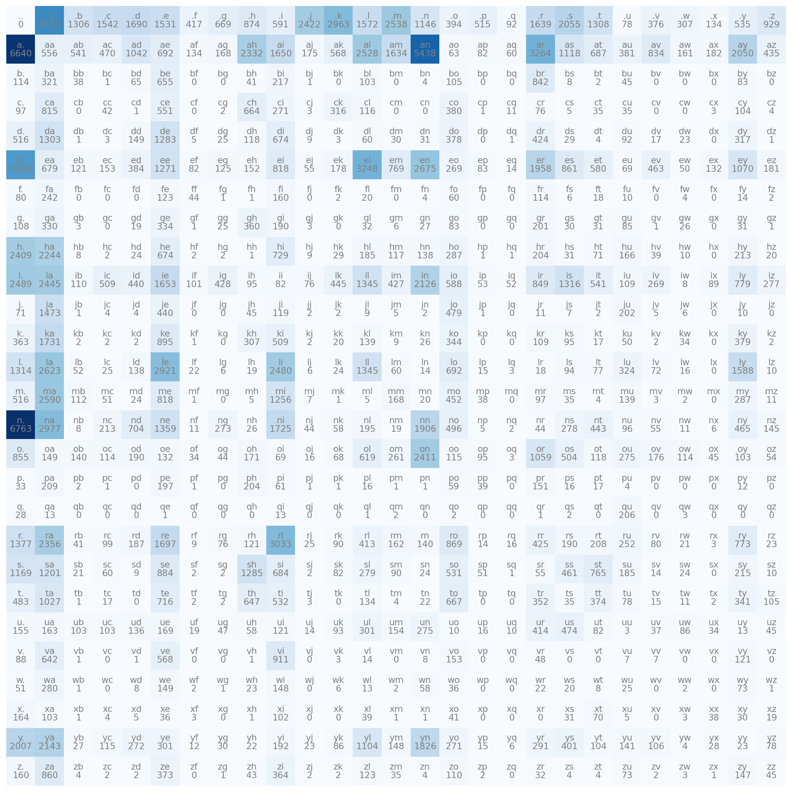
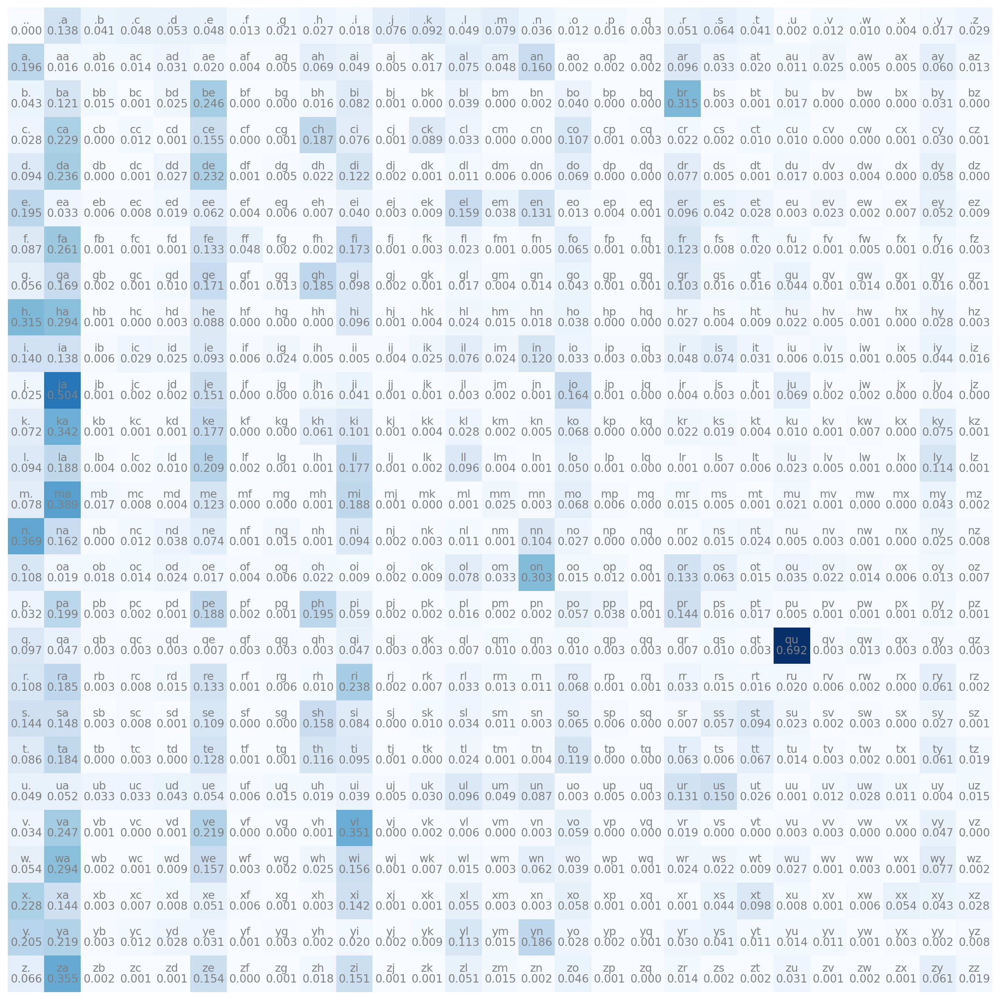

import torch
# Basically makes a list of all the names
names = open("names.txt", "r").read().splitlines()
names[:5]['emma', 'olivia', 'ava', 'isabella', 'sophia']Part 1
Luca WB
January 28, 2026
August 11, 2026
In this post, we will implement an Autoregressive Neural Network from scratch, relying solely on the PyTorch tensor class. We assume prior familiarity with Neural Networks; however, if your knowledge feels a bit rusty or you need a refresher, I recommend reading this post beforehand Building Neural Networks from Scratch.
The main reason for this is to learn how an Autoregressive NN works to generate words, for this, I’m drawing on Andrej Karpathy’s video series about makemore, a network capable of creating more words of the same type, so if you train with names, it generates more proper names it generates more words that resemble proper names, and so on with anything that is formed by letters.
In this post, I will cover how to make a simple model for our baseline, and how to implement a model with MLP and compare them.
First, you need to download PyTorch and the dataset. For PyTorch, just download in the official site https://pytorch.org/get-started/locally/. Now, for the dataset, you can create your own with random names that you can think, but It’s much easier just download the names.txt dataset from the Andrej repository https://github.com/karpathy/makemore/blob/master/names.txt.
In purpose of this, it’s just to create the most simple and naive model. It’s important because we need some baseline to compare with our future models, so we will create a model called bigram, the logic is just to look to the last character. Note that you will use just one character of context for our model, and we will consider that the most small part of our word is a character, for models like chatGPT, they don’t use characters, they use combinations of characters similar to syllables.
So, to start, we need first import our dataset and PyTorch
import torch
# Basically makes a list of all the names
names = open("names.txt", "r").read().splitlines()
names[:5]['emma', 'olivia', 'ava', 'isabella', 'sophia']Most part of models usually can’t handle characters, so it’s useful to convert this letters in numbers in some way. For this, there are many possibles, but I will use just a simple dictionary to convert them. But we
chars = sorted(list(set("".join(names)))) # Creates an ordered list with all letters in our dataset
charToInt = {s:i+1 for i,s in enumerate(chars)} # Creates a dict to convert chars to int, we add one in the value, because of the below line
charToInt["."] = 0 # I will explain later why we need a special character
print(charToInt){'a': 1, 'b': 2, 'c': 3, 'd': 4, 'e': 5, 'f': 6, 'g': 7, 'h': 8, 'i': 9, 'j': 10, 'k': 11, 'l': 12, 'm': 13, 'n': 14, 'o': 15, 'p': 16, 'q': 17, 'r': 18, 's': 19, 't': 20, 'u': 21, 'v': 22, 'w': 23, 'x': 24, 'y': 25, 'z': 26, '.': 0}Just to get it ready, if we convert to int, so we can read it at the end, we will need an intToChar converter, so let’s get it ready
{1: 'a', 2: 'b', 3: 'c', 4: 'd', 5: 'e', 6: 'f', 7: 'g', 8: 'h', 9: 'i', 10: 'j', 11: 'k', 12: 'l', 13: 'm', 14: 'n', 15: 'o', 16: 'p', 17: 'q', 18: 'r', 19: 's', 20: 't', 21: 'u', 22: 'v', 23: 'w', 24: 'x', 25: 'y', 26: 'z', 0: '.'}Now, for our model, we need to calculate the total number that each sequence occurs, like, if we start with letter “a”, how many times occurs that “m” is the next character. And it’s for this that we need and special characters, because we always need something to start, after all, the autoregressive model logic and take the output of the model and put it in its input, so we need an initial input. In our case, we will use “.” as the symbol to start a name/words and to stop word (without a final symbol, it would generate forever). To make more clear, see the code below
Basically, this count how often some sequence of characters occurs, like the most common letter sequence is “n” follow by “.”, this mean, that the most commum letter to finish a name in our dataset it’s “n”. If you run with all the names, you can use the code below to find the most common occurrences
id1, id2 = (N == N.max()).nonzero(as_tuple=True) # Creates a boolean matrix that only it's True in the max value, than return a tuple where its true
print(intToChar[id1.item()], "-->", intToChar[id2.item()],"occurs ", N.max().item())n --> . occurs 6763So let’s see how our bigrams are distributed
import matplotlib.pyplot as plt
plt.figure(figsize= (16,16))
plt.imshow(N, cmap="Blues")
for i in range(27):
for j in range(27):
chstr = intToChar[i] + intToChar[j]
plt.text(j,i, chstr, ha="center", va="bottom", color="gray")
plt.text(j,i, N[i,j].item(), ha="center", va="top", color="gray")
plt.axis("off")
One thing very interesting you can note, it’s that there are many combinations that don’t exist, like “bk” or “gc”. This makes it impossible for our model to generate a name with this combination, it is ok to leave it like this, but it would be a good practice to add 1 in all values, thus ensuring that at least there is the minimal possibility of generating a rare sequence
So, lets transform our probability matrix
import matplotlib.pyplot as plt
plt.figure(figsize= (16,16))
plt.imshow(P, cmap="Blues")
for i in range(27):
for j in range(27):
chstr = intToChar[i] + intToChar[j]
plt.text(j,i, chstr, ha="center", va="bottom", color="gray")
plt.text(j,i, f"{P[i,j].item():.3f}", ha="center", va="top", color="gray")
plt.axis("off")
Some probabilities stay in 0 because the visualization it’s limited to 3 decimal numbers. Now we already have our model, it’s just our probability matrix P, below I will show how to use it.
for i in range(10):
out = []
init = 0
while True:
id = torch.multinomial(P[init], num_samples=1, replacement=True).item()
if id == 0:
break
out.append(intToChar[id])
init = id
print("".join(out)) an
ttyirymorett
rishoe
pi
meladinare
ja
pah
k
cavivaris
glaienananassoNot good at all, but it’s correct, if you think the model it’s just saying random letters, see the code below, were any letter has the same probability
N = torch.ones((27,27))
P = N
P = P / P.sum(dim=1, keepdims=True)
for i in range(10):
out = []
init = 0
while True:
id = torch.multinomial(P[init], num_samples=1, replacement=True).item()
if id == 0:
break
out.append(intToChar[id])
init = id
print("".join(out)) ncfn
vdjjdqoepzab
ribbxoiwvlrerudhprexxplodpkckqjabgnewwguqaynarkp
ikwq
arlfu
p
uouqpvhljolb
esoyrodnjhqlrwttspaviyyfqlukygp
rzbkmdlhehymlvfqengucsdzlsrivmomj
yxsecrpdibeipzlbmnpxbcgeqkyxvyubbfMoving forward, now we need to create our MLP, the basic idea is to create a first layer that is responsible for transforming the characters(or better, the number that represents the character) into an embedding form, and then connect into a normal dense layer. An embedding form is basically a number that represent a word in a vector with multiple numbers. One reason for this is that in this way, the model have a representation in vector space of the letters, so, the vowels probably will be close from each other, and our special character “.” will likely be distant from all other characters. For the model, this mean that de vowels probably can be changed with other vowels without increasing much loss. After create this, will simply connect in a common dense layer and a layer for output.
First, we need to create a new split of our data, we need X (the decision variables, our context) and Y (the target, the next char)
context_size = 3 # This is a very important variable, this mean how many characters the model will see to predict next
X, Y = [], []
for n in names:
context = [0] * context_size # Create vector with 0 (the int that represent "." for us) with the length of our context
for ch in n + ".": # We add "." just in final, because the context already start with "."
ix = charToInt[ch]
X.append(context)
Y.append(ix)
context = context[1:] + [ix] # We remove the first int in context and add the new
X = torch.tensor(X)
Y = torch.tensor(Y)
print(X.shape, Y.shape)torch.Size([228146, 3]) torch.Size([228146])To create our first layer that will embed the integers, it will act like a weight matrix, but without bias (we don’t need bias because it’s redundant, you will see later that we don’t even need to actually perform multiplication).
emb_dim = 2
C = torch.randn((27, emb_dim)) # 27 because our vocabulary have 27 words (the char + ".") and 2 because we want to transform each char into a vector with 2 dimensions
C.shapetorch.Size([27, 2])Now, to test, we need to multiply the X with C, but the shape doesn’t match
So, for be able to make the multiplication, we need to make the last dimension of X become 27, this can be achieved by simple putting one hot, but it’s a better way to do that. below there is a multiplication between a one hot vector that represent 5 (“e” in our vocabulary)
tensor([-0.7247, 1.3008])Now, see the code below
(tensor([-0.7247, 1.3008]),
tensor([[-0.7247, 1.3008],
[ 2.2947, -1.9208],
[-0.7884, 0.8301]]))Basically, multiply by a one hot vector, it’s pick up the specific row, so, to solve our multiplication problem, we don’t need to transform all the last dimension of X with one_hot encoding, we can just use X like an index for C.
The first dimension represent the inputs, the second is the size of our context, and the last is the value in the embedding. To clarify, the code below, pick up the embedding value of the letter in the second position in the context for the sixth prediction
Going further, since we now have our chars represented in an embedding form, just create the deep layers; But we have another problem in the dimensions of matrix, see below
In deep learning, it’s always matrix multiplications between layers, now we want to do one with embedding layer and some weight matrix W1, like below: \[ \sigma(\mathbf{emb} \mathbf{W}_1 + \mathbf{b}_1) \]
Since \(W_1\) is a matrix, emb also needs to be one, so we can perform standard deep learning operations. We can use several PyTorch functions for this, like reshape, but the most efficient is view. This is because view doesn’t change the underlying data in memory; it just changes how the tensor is read. See below how this works:
B = torch.tensor(( ((1,2), (3,4)), ((5,6), (7,8)), ((9,10), (11,12)) ))
B.shape, B, B.view((-1,3)), B.view((-1,3)).shape (torch.Size([3, 2, 2]),
tensor([[[ 1, 2],
[ 3, 4]],
[[ 5, 6],
[ 7, 8]],
[[ 9, 10],
[11, 12]]]),
tensor([[ 1, 2, 3],
[ 4, 5, 6],
[ 7, 8, 9],
[10, 11, 12]]),
torch.Size([4, 3]))PyTorch reads in order from the last dimension in the tensor, and just will pack the elements in the quantity you ask. By applying this we do this with the emb, our objective is to create a dimension with all the context, basically each row will be a complete context:
(tensor([[0.0794, 0.5860],
[0.0794, 0.5860],
[0.0794, 0.5860]]),
tensor([[0.0794, 0.5860, 0.0794, 0.5860, 0.0794, 0.5860]]))Now we can build the other layers like below
W1 = torch.randn((context_size*emb_dim, 100)) # The first row is to be possible the multiplication, and the second it's the number of neurons
b1 = torch.randn(100)
W2 = torch.randn((100, 27)) # It's important that we return have the last dimension equal to the length of our vocabulary, for be possible to use some loss function comparing the predicted terms with the original ones
b2 = torch.randn(27)
h = torch.relu(emb.view(-1, W1.shape[0]) @ W1 + b1)
logits = torch.relu(h @ W2 + b2)
logits[:3]tensor([[ 0.0000, 19.4494, 0.0000, 0.0000, 0.0000, 13.5259, 0.0000, 0.0000,
0.0000, 0.3754, 0.0000, 15.0779, 0.0000, 3.9875, 22.5124, 0.0000,
0.0000, 0.0000, 3.5872, 6.3738, 0.0000, 12.9481, 1.1566, 0.0000,
0.0000, 0.0000, 0.0000],
[ 0.0000, 19.3482, 0.9336, 0.0000, 0.0000, 9.8531, 0.0000, 0.0000,
0.0000, 12.6878, 0.0000, 17.6782, 0.0000, 11.3464, 18.1127, 3.1843,
0.0000, 0.0000, 11.7951, 2.8019, 0.0000, 8.9295, 13.6857, 0.0000,
0.0000, 0.0000, 0.0000],
[ 0.0000, 18.4656, 8.1224, 0.0000, 2.6446, 25.1985, 18.4467, 21.1813,
0.0000, 0.0000, 0.0000, 45.2228, 0.0000, 27.6953, 34.0277, 0.0000,
0.0000, 3.6034, 0.0000, 16.4781, 13.4579, 12.0611, 0.0000, 0.0000,
0.0000, 0.0000, 0.0000]])Note that the initial logits are completely random, because the neural network is untrained, to do this we need a way to compute the loss, at this stage, the standard approach is, is with softmax and cross entropy. Softmax is basically a function that turns a vector of real numbers into probabilities, making it much easier to compute derivatives. It is defined by the following expression: \[ \text{Softmax}(z_i) = \frac{e^{z_i}}{\sum_{j=1}^{K} e^{z_j}} \]
And cross entropy is just a negative sum for all log probabilities that matches with the true label \[ L_{CE} = -\sum_{i=1}^{C} y_i \log(\hat{y}_i) \]
To do softmax in PyTorch, see the code below
A = torch.tensor(((1,2), (2,2)))
counts = A.exp()
probs = counts / counts.sum(axis=1, keepdims=True) # Axis = 1 tell to PyTorch to compute the sum belong the columns
probstensor([[0.2689, 0.7311],
[0.5000, 0.5000]])Note that the keepdims = True is necessary, with you don’t put it, see what happens
This occurs because of PyTorch’s broadcast system, which aligns the two tensors from right to left, with the last dimensions matching; PyTorch simply replicates these values along other axes. Going to the cross-entropy, we just need to sum the log probabilities with the larger probability in a vector, which is the probability that predicts the correct value.
probs = counts / counts.sum(axis=1, keepdims=True)
values = torch.tensor((0,1)) # The correct value is represents by the index like in our vocabulary, the first row the correct is the index 0, but our model predict index 1
loss = -probs[torch.arange(A.shape[0]), values].log().sum() # Just pick all rows and the column in values
losstensor(2.0064)If we do this with our logits, it will be correct, but PyTorch offers a better way to do softmax cross-entropy. PyTorch does all these three lines without create intermediates tensors and applies a technique to make it more numerically stable.
A = torch.tensor([-5,-3, 0, 100])
B = torch.tensor([-5,-3, 0, 100]) - 100
C = torch.tensor([1,2,5])
D = torch.tensor([1,2,5]) - 5
counts1 = A.exp()
probs1 = counts1 / counts1.sum()
counts2 = B.exp()
probs2 = counts2 / counts2.sum()
counts3 = C.exp()
probs3 = counts3 / counts3.sum()
counts4 = D.exp()
probs4 = counts4 / counts4.sum()
probs1, probs2, probs3, probs4(tensor([0., 0., 0., nan]),
tensor([0.0000e+00, 1.4013e-45, 3.7835e-44, 1.0000e+00]),
tensor([0.0171, 0.0466, 0.9362]),
tensor([0.0171, 0.0466, 0.9362]))As you can see in C and D, subtracting a number from a tensor before applying the softmax doesn’t change the results. But our computer struggles to handle a bigger number when we perform exp function, so the trick it’s subtract the bigger value from the vector. Finally, we can now apply this in our logits with the native function in PyTorch
Now we just need to put all these together and make a train loop
emb_dim = 2
C = torch.randn((27, emb_dim))
W1 = torch.randn((context_size*emb_dim, 100))
b1 = torch.randn(100)
W2 = torch.randn((100, 27))
b2 = torch.randn(27)
parameters = [C, W1, b1, W2, b2]
for p in parameters:
p.requires_grad = True # This make PyTorch calculates and keep the gradients values
epochs = 1000
lr = 0.1
for epoch in range(epochs):
emb = C[X]
h = torch.relu(emb.view(-1, context_size*emb_dim) @ W1 + b1)
logits = h @ W2 + b2
loss = F.cross_entropy(logits, Y)
# Backpropgation
for p in parameters:
p.grad = None
loss.backward()
for p in parameters:
p.data -= lr*p.grad
losstensor(2.5337, grad_fn=<NllLossBackward0>)If you doesn’t understand the code above very well, check this other post Building Neural Networks from Scratch
Now, let’s test this new model. The code below generates 20 random names
for _ in range(20):
out = []
context = [0] * context_size
while True:
emb = C[torch.tensor([context])]
h = torch.relu(emb.view(-1,W1.shape[0]) @ W1 + b1)
logits = h @ W2 + b2
probs = F.softmax(logits, dim=1)
ix = torch.multinomial(probs, 1).item()
out.append(ix)
context = context[1:] + [ix]
if ix == 0:
break
print(''.join(intToChar[it] for it in out))aryesnillunhan.
cnyrcasa.
igadi.
larleem.
gremaro.
davi.
arm.
ael.
say.
veve.
zyen.
ragdaylve.
rraliancmasaaa.
muresa.
dienndi.
onmhn.
glaupielainajdinco.
jifesiele.
rador.
.You probably noticed that the loss in our neural network is worse than the baseline model, so, why have all this trouble? This trouble worth because the advantage of this approach compared to to the baseline, it’s the fact you can improve this model just by increasing the context_size, the embedding dim, adding more layers.
But it’s your work improve these model by tuning the hyperparameters. So, this is some exercise:
Change the code in baseline to have some loss to compare with the neural network (Tip: You can use Negative Log-Likelihood)
Improve the neural network
We already have a full trained neural network, these mean that the first layer (the embedding layer) is already trained. The code below shows us how our model understand the letters for this task (only work with emb_dim = 2)